背景：为什么要把一次审查拆成六个 Prompt？
如果直接把整个 PR 的 git diff 塞进一个 Prompt 让大模型或通用 Agent 审，工程落地上通常会遇到三个具体问题：
多文件混杂容易漏看
业务实现、单测、配置文件混在同一个长上下文里，模型注意力分散，经常漏审后面的文件。
只看 diff 片段导致误报
不读完整源文件、不查函数调用方，模型靠猜上下文给建议，产生大量与实际代码不符的幻觉评论。
引用代码被改写，行号算不出
模型输出评论时常把引用的原代码写错几个字符，导致程序无法用文本匹配算出对应的 Git 行号。
本文跟踪的示例 PR：给登录流程增加“会话过期”处理（改了 8 个文件）
| 索引 | 文件路径 | 改动行数 | 变更内容 |
|---|---|---|---|
| 0 | internal/auth/login.go | +120 / -20 | 登录主流程实现 |
| 1 | internal/auth/session.go | +45 / -10 | 会话过期判断逻辑 |
| 2 | internal/auth/login_test.go | +80 | 登录单元测试 |
| 3 | internal/auth/session_test.go | +30 | 会话单元测试 |
| 4 | internal/i18n/messages_en.properties | +3 / -1 | 英文报错文案 |
| 5 | internal/i18n/messages_zh.properties | +3 / -1 | 中文报错文案 |
| 6 | config/auth.yaml | +10 / -2 | 会话 TTL 配置项 |
| 7 | docs/auth.md | +20 | 鉴权文档说明 |
第 0 站：调模型前，Go 程序先筛文件并冻结清单
把不该审的文件踢掉，建好支持断点续跑的任务账本（Manifest）
剔除噪音与超大文件
过滤二进制、密钥、exclude 文件、不支持后缀，以及单文件 diff 超 80% MAX_TOKENS 的文件。
冻结审查清单
写入 manifest.selected 锁定覆盖范围，后续逐文件记录完成或失败状态。
复用历史（--resume）
带上 --resume 参数时，直接复用上次账本中已完成的结果，仅补跑未完成部分。
跳过纯删除并判阈值
剔除纯删除文件；剩余文件数 8 ≥ 4，达到分组阈值，进入 GROUPING。
第 1 站 GROUPING：把相关文件配成组，组间并发审
把业务代码和对应的单测放在同一组，避免单审时误报“缺少测试”
[0] MODIFIED internal/auth/login.go (+120/-20) [1] MODIFIED internal/auth/session.go (+45/-10) [2] MODIFIED internal/auth/login_test.go (+80/-0) [3] MODIFIED internal/auth/session_test.go (+30/-0) [4] MODIFIED internal/i18n/messages_en.properties (+3/-1) [5] MODIFIED internal/i18n/messages_zh.properties (+3/-1) [6] MODIFIED config/auth.yaml (+10/-2) [7] MODIFIED docs/auth.md (+20/-0)
[
{"label": "login flow", "files": [0, 2]},
{"label": "session handling", "files": [1, 3]},
{"label": "i18n messages", "files": [4, 5]},
{"label": "auth config", "files": [6]},
{"label": "docs", "files": [7]}
]
prompt 另有三条输出约束：用索引引用文件（不重复完整路径）、每个文件只进一个组、只输出 JSON 数组。模型不守约时由程序纠偏：
- 模型漏分的文件 → 自动补成单文件组；
- 单组超过 10 个文件（
maxFilesPerGroup）→ 自动拆开； - 组内合并 diff 超过 Token 预算 → 拆回单文件组；
- JSON 解析失败 → 降级为所有文件逐个单审。
还原索引后，5 个审查组作为独立 goroutine 并发执行（默认并发度 8，可通过 --concurrency 修改）。
注意：GROUPING 只决定谁和谁一起审，后续的 PLAN、MAIN、FILTER 都是各自重新发起的独立模型请求。

点击放大第 2 站 PLAN：改动行数达标时，先列一份排查提纲
不挂载真实工具，快速扫一遍 diff 列出高风险怀疑点和待查文件
Summary: Add session expiry enforcement to login and refresh flows. Issues 1. [high] Refresh path does not check whether the session already expired → file_read internal/auth/session.go — confirm TTL check location 2. [medium] Login failure message is hardcoded English → file_read internal/i18n/messages_en.properties — check new key exists 3. [low] Test does not cover expired-session branch → file_read internal/auth/login_test.go — confirm missing case
程序把这段文本原样存为 planResult（不做结构化解析，也不自动跑工具），通过 {{plan_guidance}} 塞进第 1 轮 MAIN 帮助快速聚焦重点。
第 2 轮开始时整段删掉这段计划——避免模型产生路径依赖，第二轮还只盯着老计划里的几个怀疑点看。

点击放大第 3 站 MAIN 第 1 轮：调工具查仓库上下文，提交代码评论
在多轮 Tool Loop 中读取源文件、搜索调用方，通过 code_comment 提交发现的问题
file_read参数: file_path读取仓库中的完整源文件，补齐 diff 片段之外的上下文逻辑。
code_search参数: search_text全局搜索函数定义或调用方，确认改动是否破坏上下游调用。
code_commentpath / existing_code / content提交一条审查评论。调用后立即向模型返回成功，定位任务交由后台 Worker 异步执行。
task_done结束信号宣告本组审查完成。程序随后调用 AwaitKey(groupKey) 等待后台评论 Worker 排空。
login flow 组共提交 3 条评论。其中 1 条的 existing_code 与 diff 原文不完全一致，后台 Worker 文本匹配失败，触发第 4 站重定位。这 3 条评论分别说了什么？
模型通过 code_comment 提交评论，每条带 path / content / existing_code / category / severity。本例 3 条的最终去向：
| ID | 文件 | 评论内容 | 级别 | 去向 |
|---|---|---|---|---|
| c-0 | login.go | 刷新路径没有检查会话是否已过期，过期会话仍能续期。 | bug · high | FILTER 保留 → 成为 confirmed |
| c-1 | login.go | 讨论的 auth.yaml 配置项变化不在本文件 diff 中 | — | FILTER 删除（理由 A：代码不存在） |
| c-2 | login.go | 称 retryCount 声明了两次 | — | FILTER 删除（理由 B：diff 直接反驳） |
{
"tool_calls": [
{
"name": "code_comment",
"arguments": {
"comments": [
{
"path": "internal/auth/login.go",
"content": "刷新路径没有检查会话是否已过期，过期会话仍能续期。",
"existing_code": "if refreshed, err := refreshSession(token); err == nil {",
"category": "bug",
"severity": "high"
}
]
}
}
]
}

点击放大第 4 站 RE_LOCATION：代码片段匹配不上时，从 diff 里重新抠原文
解决模型凭记忆改写代码片段导致算不出 Git 行号的问题
login.go 的 diff 中直接检索代码片段if user == nil {
return errors.New("invalid credentials")
}
if user == nil {
return nil, ErrInvalidCredentials
}
- 从 diff 中逐字复制，不改写、不重排；
- 去掉行首的
+/-或空格； - 只保留与问题直接相关的代码；
- 只输出代码块，不多说一句。
start_line: 0, end_line: 0 保留在结果集中。RE_LOCATION 只找位置，不判断评论对错。
点击放大第 5 站 FILTER：对照本组 diff，删掉能被事实证伪的评论
用 baseline 切片只审本轮新增评论，屏蔽原模型的 severity 和 thinking 防带偏
- 理由 A（代码不存在）：评论描述的代码在所属文件 diff 里不存在（本例 c-1 在
login.go下讨论auth.yaml配置，被删）。 - 理由 B（diff 直接反驳）：某行 diff 直接证伪评论说法（本例 c-2 称
retryCount声明了两次，实际 diff 只有一次，被删）。
“无法确认、价值不高、代码风格建议”均不是删除理由。本例 c-0（刷新路径未校验过期） 保留并标记为 confirmed。

点击放大第 6 站 MAIN 第 2 轮：新开对话，带上已确认结论再查一遍
不继承第 1 轮聊天记录、移除 PLAN 引导，避免重复报告已知问题
第 2 轮是一个全新的 MAIN 对话，不带第 1 轮读文件、搜代码的历史消息。只把前序存活的评论摘要塞进 Previously Confirmed Findings（代码限 200 字符、正文限 300 字符、最多 30 条），提示模型不要重复报告。
- 达到最大轮数 / 本轮无新增存活评论 / confirmed 满 30 条；
- 连续 3 轮无有效工具结果（
maxConsecutiveEmptyRounds = 3）； - 若因工具次数或 Token 预算耗尽中断，会先进入 Grace Round（只准调
code_comment和task_done补交已发现的问题）。
第 2 轮的新发现
不再受 PLAN 引导后，模型在测试文件里找到了一个新问题——第 1 轮计划里提过、但当时没提交：
{
"tool_calls": [
{
"name": "code_comment",
"arguments": {
"comments": [
{
"path": "internal/auth/login_test.go",
"content": "缺少过期会话的测试分支。",
"existing_code": "func TestLoginSuccess(t *testing.T) {",
"category": "test",
"severity": "low"
}
]
}
}
]
}
第 7 站 COMPRESSION：单轮工具调用太多时，压缩中间旧轮次
保留开头指令和最近几轮交互，把中间读文件/搜代码的历史压成 5 维摘要
frozen + 追加在初始 user 末尾的摘要标签 + active 区；若压缩失败或摘要为空则保留原消息。### Identified Code Issues - [HIGH] session.go:45 — 过期会话仍可能被刷新 ### Tool Call Conclusions - file_read(session.go): 确认 Refresh 方法没有检查过期时间 ### Completed Tasks - 已检查 session.go 的刷新实现 ### Pending Tasks - 还需要确认 session_test.go 是否覆盖该分支 ### Current Focus - 正在确认过期会话是否能通过刷新继续有效。

点击放大第 8 站 收尾：等待并发任务、落盘日志并渲染报告
所有组完成后按固定顺序执行 9 步收尾，产出 manifest 与 session JSONL
session.Finalize 封存全量运行轨迹--resume 使用最终报告长什么样？
两轮 MAIN、两轮 FILTER 之后，本例存活 2 条评论：c-0（bug · high）和第 2 轮新增的测试缺失（test · low）。第 09 步把它们渲染成三种格式，text 按文件分节、带定位行号：
─── internal/auth/login.go:31-33 ─── [bug · high] 刷新路径没有检查会话是否已过期，过期会话仍能续期。 ─── internal/auth/login_test.go:12-14 ─── [test · low] 缺少过期会话的测试分支。
{
"status": "success",
"comments": [
{
"path": "internal/auth/login.go",
"content": "刷新路径没有检查会话是否已过期，过期会话仍能续期。",
"existing_code": "if refreshed, err := refreshSession(token); err == nil {",
"start_line": 31,
"end_line": 33,
"category": "bug",
"severity": "high"
}
],
"manifest": {
"terminal_state": "complete"
}
}
第 9 站 复盘：主干数据流与六个 Prompt 速查表
一张调用链 + 一张对照表，看完即可对应到仓库源码
8 个变更文件 │ [Go 程序] 读 diff、筛选文件、冻结 manifest.selected ▼ GROUPING_TASK（文件元数据 → JSON 分组） │ [Go 程序] 拆出 5 个审查组，组间并行 ▼ PLAN_TASK（大改动触发：本组 diff + 规则 + 工具文本说明 → 纯文本计划） ▼ MAIN_TASK 第 1 轮（带工具对话：file_read / code_search … → code_comment → task_done） │ ├─ [评论 Worker] 本文件匹配 → 跨文件唯一命中 → 失败时调 RE_LOCATION_TASK │ └─ [上下文监控] 超过 60%/80% 阈值时调 MEMORY_COMPRESSION_TASK 压缩旧轮次 ▼ 等本组评论 Worker 排空 → REVIEW_FILTER_TASK 第 1 轮（本组 diff + 本轮新评论 → 删误报或放行） │ 存活评论标记为 confirmed ▼ MAIN_TASK 第 2 轮（同一组 diff + 规则 + confirmed；移除 PLAN，不继承第 1 轮对话历史） ▼ REVIEW_FILTER_TASK 第 2 轮（只过滤第 2 轮新增评论） ▼ [Go 程序九步收尾] 等所有组/Worker/压缩 → manifest → session_end → retry report → 最终行号解析 → 输出 text / JSON / SARIF
| Prompt（源码常量） | 触发条件 | 只负责什么 |
|---|---|---|
| GROUPING_TASK | 待审文件数 ≥ 4 | 决定哪些文件放在同一组一起审 |
| PLAN_TASK | 单文件 ≥ 50 行，或组 ≥ 2 文件且合计 ≥ 100 行 | 给第 1 轮 MAIN 提供排查路线图 |
| MAIN_TASK | 每组、每轮必跑 | 读代码、调工具查上下文、提交评论 |
| REVIEW_FILTER_TASK | 本轮有新评论，且未加 --no-filter | 只删除能被 diff 事实证伪的本轮新增评论 |
| MEMORY_COMPRESSION_TASK | 单轮 MAIN 对话超过 60% / 80% 阈值 | 保留头尾，把中间较早的工具轮次压成摘要 |
| RE_LOCATION_TASK | 评论未定位、跨文件未命中，且原 path 有 diff | 从 diff 原文中逐字提取代码片段以匹配行号 |